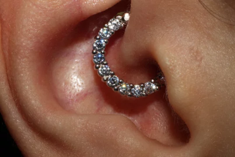
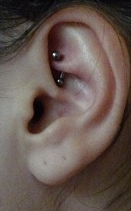
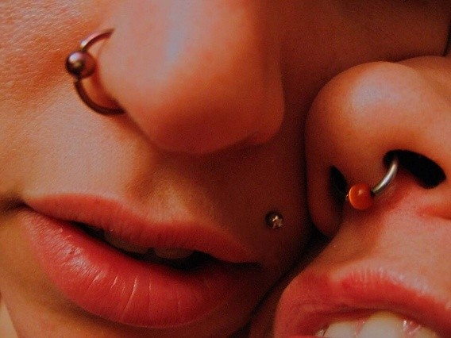
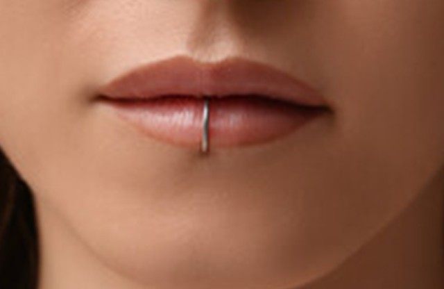
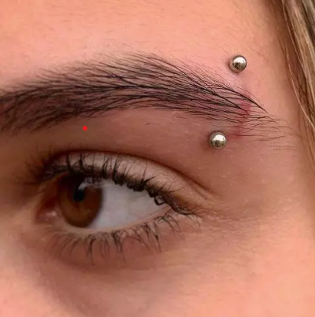
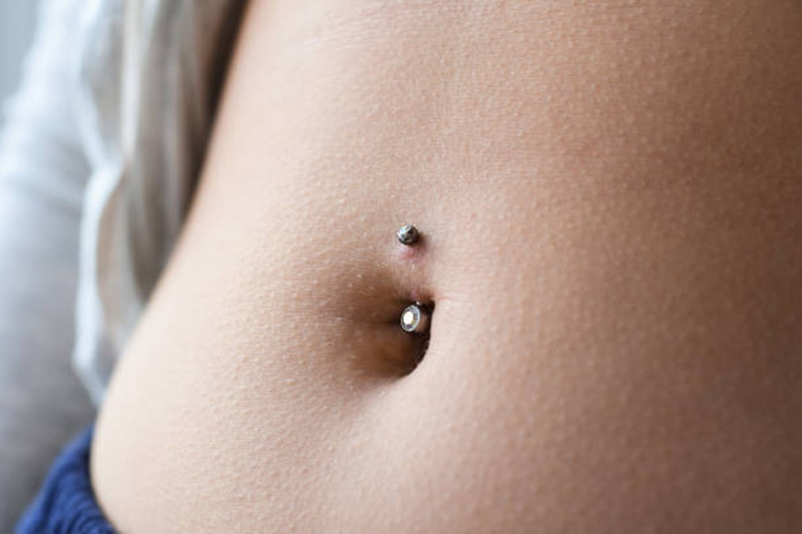

CARTILAGE

Cartilage piercings are pierced on the harder, fleshy part of the ear. The most common placements are the “Helix” that sits on the upper part of the ear, or the “Tragus”, which is that small fleshy bit just in front of the ear canal. Most people get their helix done after their lobes but take around 9-12 months to heal. On the other hand, the tragus heals in 6-9 months. Once the helix and tragus are healed, a popular style is to put a small hoop in.
CONCH

The conch is exactly what is sounds like, it sits in the middle of the ear, in an area that resembles a conch shell! This piercing receives mixed reviews in pain tolerance, with some customers reporting longer healing times than others. Since it sits comfortably in the center of the ear, it is less prone to snagging on clothes or hair. The one downside is that you are unable to use air pods during the healing time of at least one year, as it may put extra pressure and discomfort on the piercing.
DAITH

Daith piercings sit in the inner cartilage of the ear and are the only ear piercing that can initially be fitted with a hoop! Some customers report a small “crunch” sensation during the piercing and experience mild to moderate pain. Healing typically takes about 9–12 months, as it is a cartilage piercing. Although not clinically proven, some people report that daith piercings help reduce the frequency or severity of migraines.
ROOK

Rook piercings sit on the small shelf of the upper inner part of the ear and must be pierced with a curved barbell. Personally, this had been one of my most painful piercings with a slight burn but had an easy healing process as it is located inside the ear. Once the healing of 9-12 months is complete, some change the jewelry into a hoop.
NOSE

Nose piercings are placed on the nostril or septum and are popular for their versatility and subtle appearance. Nostril piercings typically heal faster than cartilage piercings, with an average healing time of 2–4 months, while septum piercings may heal slightly faster. Initial jewelry is usually a stud or ring made from implant-grade materials. Proper aftercare is important, especially avoiding excessive touching or twisting, as the nose is exposed to bacteria from frequent contact of other germs.
LIP

Lip piercings, such as labret or vertical labret piercings, pass through both skin and lip tissue, which can affect healing. Initial healing generally takes 6–8 weeks, with full healing around 3–4 months. Oral hygiene is especially important, and wearers should avoid playing with the jewelry to prevent tooth and gum damage. Gum recession is quite common for labret piercings, although some customers report that some piercers can specially pierce the skin in a way that does not put too much damage on the gums or teeth. The jewelry starts off with a straight barbell and can then be upgraded to a hoop after a full healing process.
EYEBROW

If you are opting for a unique look, the eyebrow piercing is a great option. Pierced above the corner of the brow, a curved barbell is marked and pierced through the cartilage. Full healing takes aroung 6 months and this piercing is definetly prone to rejection as it sits on the face, where it can easilly snag on clothes or hair. The area should be kept clean from any makeup or other skin products as well.
NAVAL

Naval piercings are placed through the rim of the belly button and are anatomy-dependent, meaning not everyone is suited for one. Healing can be slow due to movement and friction from clothing, as well as the movement of sitting down which can squeeze the bellybutton. Full healing takes around 6–12 months, with most people receiving one in the winter, since heat in the summer can irritate the healing process. Curved barbells made from implant-grade materials are standard starter jewelry and should not have any dangling jewelry off the barbell initially. Wearing loose clothing and proper cleaning can help reduce irritation during the healing process.